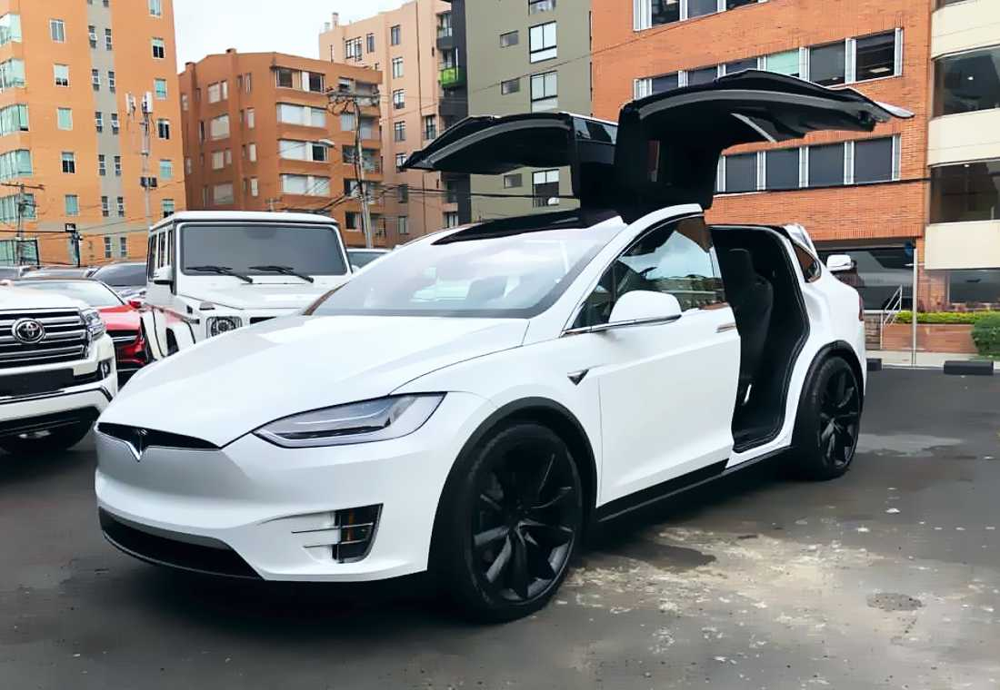

Tesla
Tesla, Inc. (originalmente Tesla Motors), que fue incorporada en julio de 2003 por Martin Eberhard y Marc Tarpenning, quienes financiaron la compañía hasta una primera ronda de financiación. Ambos hombres desempeñaron papeles activos en el desarrollo temprano de la compañía antes de la participación de Elon Musk.  Este último encabezó la primera ronda de inversión en febrero de 2004, uniéndose al directorio como su presidente. Tomó un papel activo dentro de la empresa y supervisó el diseño de productos Roadster a un nivel detallado. Ha favorecido la construcción de un modelo compacto por debajo de los 30.000 dólares y la construcción y venta de componentes de tren motriz para vehículos eléctricos y que otros fabricantes de automóviles puedan producir este tipo vehículos a precios asequibles sin tener que desarrollarlos individualmente. Para el 29 de enero de 2016, Musk poseía aproximadamente 28.9 millones de acciones de Tesla, lo que equivalía a aproximadamente el 22% de la compañía; su salario es de un dólar al año, similar al de Steve Jobs y otros CEOs de otras compañias; el resto de su compensación es en forma de bonos basados en acciones y rendimiento. Foto: Steve Jurvetson recibiendo su Tesla Model X de parte del propio Elon Musk, en el evento de lanzamiento el 29 de septiembre de 2015, en Fremont (California) | vía Wikipedia. En 2014, Musk anunció que Tesla permitiría que sus patentes tecnológicas fueran utilizadas por cualquiera de buena fe en un intento por atraer a los fabricantes de automóviles para acelerar el desarrollo de los autos eléctricos. “La desafortunada realidad es que los programas de automóviles eléctricos (o programas para cualquier vehículo que no quema hidrocarburos) en los principales fabricantes son pequeños o inexistentes, lo que constituye un promedio de mucho menos del 1% de sus ventas totales de vehículos”, mencionó Musk. En el 2018 la empresa se vio empañada por las poco premeditadas acciones de Musk en la red social Twitter. De hecho, se vio obligado a renunciar como presidente de Tesla tras haber publicado un tweet en el que afirmó la privatización de la empresa, lo que suponía su retiro de la bolsa y una recompra de acciones a 420 dólares anunciadas en el mismo tweet; la cuestión es que nada de esto se llevó a cabo. Luego de este anuncio, la cotización en bolsa de la empresa se suspendió y más adelante se desplomaría más de un 11%. Tras el caos, la Comisión de Bolsa y Valores de Estados Unidos (SEC, por sus siglas en inglés) introdujo una demanda por fraude al considerar que el tweet de Musk había sido temerario, engañoso y falso, además de haber perjudicado a una gran cantidad de inversores. Adicionalmente, la SEC también responsabilizó a la empresa por no haber tenido un control para Musk en sus redes sociales, lo que llevó a acordar también vigilancia para sus próximos tweets.